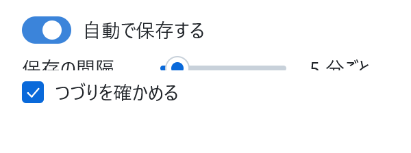
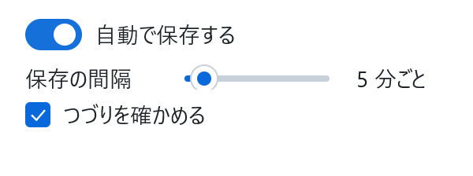
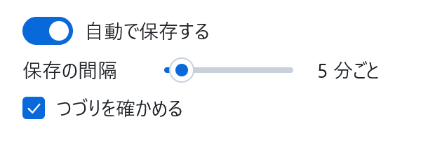
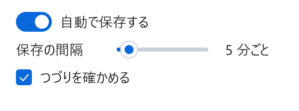

kargui 開発レポート ・ 第 6 章
動き（アニメーション）
0.2 の後の 2 つ目として、値を滑らかに動かす道具を足しました。切り替えの丸が滑り、開閉する節の中身が上から出入りします。この章では、書き方、動き方の曲線、OS の設定に従う作り、試験台での扱いを順に書きます。最後に、起動のたびに無駄なフレームを描いていた不具合と、その見つけ方を書きます。
この章で分かること
- 数を 1 つ返すだけの書き方と、毎フレーム呼ぶ理由
- 初めが速く終わりがゆっくりの曲線と、167 ms・250 ms という長さ
- Windows の「アニメーション効果」をオフにした人への対応
- 試験台では動きを切っておく理由
- 起動のたびに 6 フレーム描いていた不具合と、読み込んだ DLL を比べた見つけ方
書き方: 数を 1 つ返す
ui.animate(名前, 目標, 時間) は数を 1 つ返します。目標が変わると、返す数は今の値から新しい目標へ、時間 をかけて動きます。アプリは返った数を幅や高さに使うだけで、動きの始まりや終わりを扱いません。
let width = ui.animate("panel", if wide { 320.0 } else { 160.0 }, Duration::from_millis(250));
ui.column(|ui| {
ui.label("パネル");
})
.width(Size::Fixed(width));kargui の画面は、毎フレーム view を呼び直して作ります（第 1 章）。動きの道具も同じ形にしました。アプリは毎フレーム「今の目標」を渡し、kargui は名前ごとに「どこから・どこへ・いつ始めたか」を覚えます。egui の animate_bool も、名前と目標を毎フレーム渡す形です。WinUI は、動きを部品の性質や Storyboard として先に宣言します。kargui は即時モードなので、渡す値を変えるだけで動く前者の形にしました。
覚えた値は、そのフレームで 1 回も呼ばれなかったら捨てます。部品が画面から消えた後も、覚えた値が残り続けないようにするためです。その代わり、if の中で呼ぶと、消す時の動きが見えません。次に呼んだ時は初めての値として扱い、目標から始まるからです。手引きには「出しているかどうかに関わらず、毎フレーム呼ぶ」と書きました。
出し入れは .reveal で
ui.animate_bool(名前, 出すか) は 0 と 1 の間を 250 ms で動きます。この値を .reveal(割合) に渡すと、部品の上から割合の高さだけを見せ、残りを切り取ります。親の中では見せる高さだけを取るので、下の部品も一緒に動きます。
ui.toggle(&mut autosave, "自動で保存する");
let shown = ui.animate_bool("interval", autosave);
if shown > 0.0 {
ui.column(|ui| {
// 保存の間隔の行
})
.reveal(shown);
}



最初は手引きの例に .height(Size::Fixed(40.0 * shown)) と書きました。kargui のふつうの column は中身を切り取らないので、伸びる途中の中身が下の部品に重なります。試験は値しか見ないので、この重なりは試験では見つかりません。例を読み直して気づき、.reveal を作りました。中身は元の大きさのまま並べるので、文字が詰まったり、折り返しが変わったりもしません。切り取られた所の部品は押せず、全部隠れた部品へは Tab で移りません。
動き方の曲線と長さ
値は、初めが速く、終わりがゆっくり動きます（3 次の減速の曲線 1 − (1 − t)³）。250 ms の動きでは、半分の 125 ms で目標までの 88 % に着きます。押した直後に大きく動くので、押したことがすぐ分かります。
長さは WinUI の部品に合わせました。切り替えの丸のような小さな動きは 167 ms（ControlFastAnimationDuration）、節の出し入れは 250 ms（ControlNormalAnimationDuration）です。動いている途中で目標が変わったら、その時の値から新しい目標へ動き直します。素早く 2 回押しても、丸は端へ飛ばずに引き返します。
止まっている窓は描かない
値が動いている間だけ、kargui は次のフレームを頼みます。目標に着いたら頼むのをやめるので、止まっている窓は CPU を使いません。タスク帳を 12 秒置いた時の CPU の時間は、測る道具の最小の刻み（15.6 ms）の 1 つ分でした。作者が設定の見本で試した記録を、表にまとめました。
| 操作 | 描いた枚数 | 1 枚の仕事（平均） | いちばん長い 1 枚 |
|---|---|---|---|
| 「自動で保存する」を切る | 35 枚 | 0.43 ms | 1.32 ms |
| 入れ直す | 37 枚 | 0.48 ms | 1.27 ms |
| 素早く 2 回押す（途中で引き返す） | 63 枚 | 0.52 ms | 2.26 ms |
| アニメーション効果をオフにして 4 回押す | 0 枚 | ― | ― |
1 枚の仕事は、画面を作る時間と描く時間の合計です。250 ms で約 35 枚なので、作者のモニターは 1 秒に約 140 回書き換えていると考えられます。素早く 2 回押した時は、2 つの動きが途切れずに 1 続きの 63 枚になりました。途中で引き返しても、動きを始め直していないことが分かります。
Windows の「アニメーション効果」に従う
Windows には、画面の動きを減らす設定があります（設定 > アクセシビリティ > 視覚効果 > アニメーション効果）。動きで気分が悪くなる人や、動きに気を取られる人が使います。WCAG 2.1 の達成基準 2.3.3（操作から始まる動き、AAA）も、本来の働きに要らない動きを止められるようにすることを求めています。
kargui は窓を作る時に、この設定を SystemParametersInfoW(SPI_GETCLIENTAREAANIMATION) で読みます。アプリを開いたまま設定を変えると、OS から WM_SETTINGCHANGE が届くので、そこで読み直します。オフの間は、animate がすぐ目標の値を返します。自分で描く動きには、ui.reduce_motion() を見てもらいます。作者の記録には、設定を変えるたびに次の行が出ていました。
08:39:53.552 event=motion.setting args="key=None" result="reduce=false"
08:40:45.757 event=motion.setting args="key=None spi=0x1043" result="reduce=true"
08:41:01.893 event=motion.setting args="key=None spi=0x1043" result="reduce=false"1 行目は起動した時、2 行目はオフにした時、3 行目はオンに戻した時です。0x1043 は、OS が「アニメーション効果が変わった」と知らせる番号（SPI_SETCLIENTAREAANIMATION）です。
試験台では動きを切っておく
試験台（Harness）の時計は止まっていて、wait を呼んだ時だけ進みます。動きの途中の値も、毎回同じ数で確かめられます。
ただし、このままでは困ることがありました。開閉する節を閉じても、時計が進まないので、中身が閉じる途中の形で残り続けます。「閉じたら中身が消える」を確かめる試験は、wait を書き足さないと落ちます。そこで、試験台は動きを切った状態で始めることにしました。押した後の画面は、時計を進めなくても動き終わった形になります。動きそのものを試す時だけ、reduce_motion(false) で入れます。
// 初めは動きを切ってあるので、押すとすぐ開き終わる
let mut h = Harness::new(Drawer { open: false, shown: 0.0 });
h.click("開く");
assert_eq!(h.app().shown, 1.0);
// 動きを入れると、時計を進めた分だけ動く
let mut h = Harness::new(Drawer { open: false, shown: 0.0 });
h.reduce_motion(false).click("開く");
assert_eq!(h.app().shown, 0.0);
h.wait(Duration::from_millis(125));
assert!(h.app().shown > 0.5);多くの試験は、押した後の終わりの形を確かめます。動きを試す試験の方が少ないので、そちらに 1 行足してもらう形にしました。上の写真の並びも、この試験台で時計を 30 ms・60 ms と進めながら撮っています。
起動のたびに 6 フレーム描いていた
足し終えた後、前の版（a15bb46）と同じ時に、順番を往復させて軽さを測りました。起動の時間は変わりませんでしたが、メモリが 3 回とも同じだけ増えていました。
reports/rust-gui/bench の startup で、2 つの版を同じ時に往復の順で測った（各 15 回）。動きの前は a15bb46、直す前は 6faa5d3、直した後は 34c0402。使っているメモリは working set、自分だけのメモリは private bytes。
増え方が毎回同じなので、測り方のぶれではないと考えました。2 つの版を起動して、読み込んだ DLL を比べると、今の版だけが 5 つ多く読み込んでいました。dxcore.dll・directxdatabasehelper.dll・cfgmgr32.dll・crypt32.dll・kernel.appcore.dll で、どれも DirectX と機器の一覧に関わる DLL です。
疑った所を 1 つずつ確かめる
| 確かめたこと | 結果 |
|---|---|
| 起動で新しく呼ぶ OS の関数（アニメーション効果の設定を読む）を止めた版を作る | 5 つの DLL は残った。この関数は原因ではない |
| 前の版の exe を、今の版と同じ場所から起動する | 前の版は読み込まない。置き場所は関係ない |
| 起動の記録を読む | 今の版だけ、起動の直後に「動き」のフレームを 6 枚描いていた |
animate は、初めて呼ばれた値を「目標から目標へ、167 ms かけて動く」形で覚えていました。値は動かないのに、167 ms が終わるまで次のフレームを頼みます。タスク帳には「ダーク」の切り替えがあるので、起動のたびに 6 フレーム描いていました。動きのフレームは、画面の書き換えの時機を待ってから描きます。CPU で描く道は、この待ち方に DXGI を使います。DXGI は初めて使う時に準備するので、そこで 5 つの DLL が読み込まれていました。
初めて呼ばれた値は、止まった形で覚えるように直しました。先に「初めて呼んだ値ではフレームを頼まない」という試験を書き、直す前の作りで落ちることを確かめてから直しています。直した後は、読み込む DLL もメモリも前の版と同じになり、起動は 50〜54 ms（前の版は 52〜54 ms）でした。
動きの道具は、値が変わった時だけ動きを始めてください。初めて見た値は、止まっているものとして扱います。そうしないと、部品が画面に出るたびに、誰にも見えない動きのためにフレームを描きます。描くこと自体は 1 枚 0.1 ms ほどでも、初めて動いた時の準備（今回は DXGI）が起動のメモリを増やします。
第 3 章の shell32.dll と同じく、今回も原因は「ふだんは読まない DLL を、起動の途中で読む」ことでした。PowerShell の Get-Process で 2 つの版のモジュールの一覧を出して比べると、数分で範囲を絞れます。